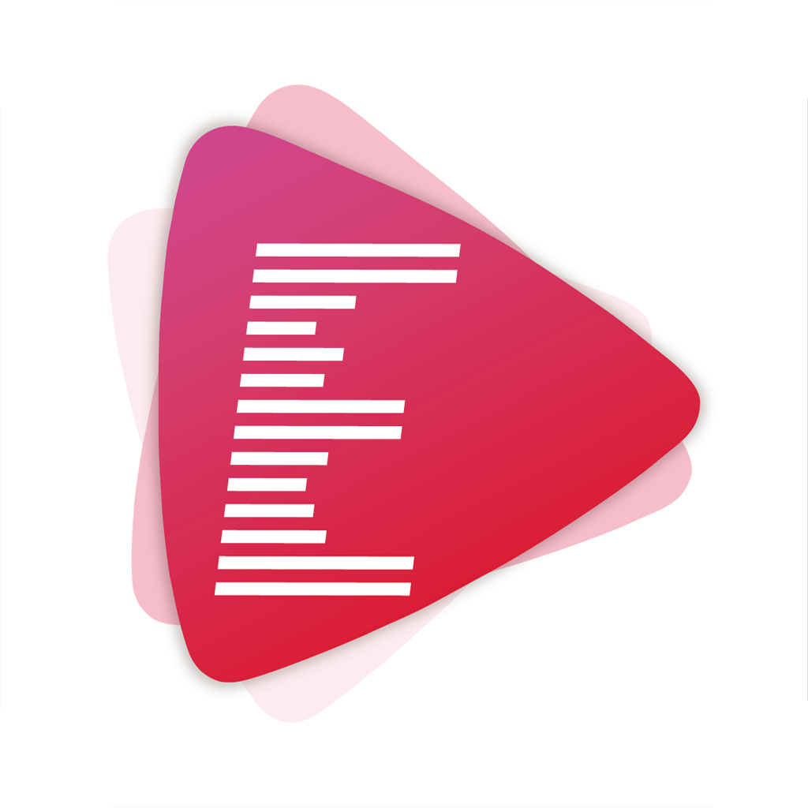

Ever Play is a pure Hi-Res music player for iOS platform. As an audiophile，I want to play Hi-Res Audio on my iPhone, but search around iTunes Store over and over again, it's hardly to find out a music player app that satisfy me very well. So we decide to develop one, with the perspective of an audiophile. Ever Play is compatible with latest iOS version, it supports all popular formats including Hi-Res ones. Ever Play is easy to use and almost full-functionality.
One of the most important feature of Ever Play is that it support DSD(up to 11.2MHz，aka. DSD256) playback, in term of PCM and DoP. When PCM mode is selected, DSD is converted to and output as PCM. When DoP mode is selected, DSD is outputted as DSD over PCM.(Connected device must be DoP-compatible to this mode, otherwise, DSD will be outputed as PCM even DoP mode is selected.)
Ever Play support up to 384kHz/32bit music file and Upsampling output Mode and you can select custom output sample rate for playback. It will automatically choose the max support format to playback, so you never need to worry about output device change.
You can custom you favorite playlist with Ever Play. Regards of music management and transfer, Ever Play support Wi-Fi transfer and iTunes files sharing. Throngh Wi-Fi Transfer, you just need type an ip address in you computer browser to transfer music files to the Ever Play app.
We redesign the player interface and interaction，not only contains the normal functions but also shows a lot of file and output information。 All for the user experience!
Ever Play will be upgraded all the time for the music never dies! Any questions about Fany, please contact us through the function of feedback without any hesitation!
• FLAC(MQA), APE, WAV, ALAC(M4A), AIFF, AIF, MP3, WMA, OGG, AAC,
• DSF, DFF(DSD64 and DSD128 support both PCM and DoP output mode, DSD256 only support PCM mode because the limit of iDevice usb2.0 bandwidth)
• CUE(Sheet)
• WiFi Music Transfer (Http)
• iTunes Files Sharing
• Playlist Management
• Playback Hi-Res audio source up to 32bit/384kHz
• Playback DSD audio source up to 11.2MHz
• Searching songs
• Display song and connected device information
• Upsampling function
• Sleep timer
• Disable Auto-lock Screen
• Auto-download Album Image(On/OFF)
• Auto-download Artist Image(On/OFF)
• USB Audio Output
• DSD to PCM
• Dop(DSD over PCM)
• Custom Output Sample Rate
• iOS11 Support
• Redesign the Player Interface and Interaction
“Ever Play”是一款iOS平台下的Hi-Res音频播放器.作为一个音乐发烧友，一直想在Itunes Store中找到一款纯粹的音乐播放器，可是比较过很多都很难找到一款中意的音乐播放器，所以我们决定从发烧友的角度自己开发一个，于是有了“Ever Play”。“Ever Play”兼容最新的iOS版本，采用新的UI设计并且支持所有流行的音乐格式，包括DSD文件。同时，“Ever Play”简单易用并且功能全面。
“Ever Play”最重要的功能之一就是对DSD文件的支持，最高支持11.2MHz的DSD256文件。DSD文件支持两种模式播放，一种是将DSD文件转化为PCM文件播放，另一种则是通过DoP的方式输出给支持DoP的外置DAC(需要连接相机套件)。
“Ever Play”支持最高 384kHz/32bit 格式的音频文件，并且提供了升频模式，你可以将任意格式的音频升频为最高 384kHz/32bit 格式的PCM输出(需要外接设备支持，iPhone 本身最高只支持48kHz/32bit输出)。当然，“Ever Play”也能够根据外接音频设备自动选择合适的输出格式。
"Ever Play"支持自定义播放列表。至于音乐管理和传输，“Ever Play”支持两种传歌方式，分别为 局域网内Wi-Fi传输和iTunes传输。通过Wi-Fi传输方式，你只需在局域网电脑的浏览器中输入相应的ip地址就能将电脑中的歌曲传输到“Ever Play”app中，方便快捷。
“Ever Play”重新设计了精美并且信息完整的播放界面，除了一般的播放控制功能，您还能非常方便的获取到音频文件的格式信息和输出信息，一切都为了更好的交互。
“Ever Play”app将一直保持更新，因为音乐不死！有任何问题请通过app的Feedback功能给我们反馈。
• FLAC(MQA), APE, WAV, ALAC(M4A), AIFF, AIF, MP3, WMA, OGG, AAC,
• DSF, DFF(DSD64 和 DSD128 既支持转化为PCM播放也支持DoP模式输出, DSD256 因为iPhone USB2.0的带宽限制只支持转化为PCM播放)
• CUE(Sheet)
• WiFi 传输(Http)
• iTunes 文件共享
• 播放列表管理
• 最高支持384kHz/32bit的Hi-Res高清音频文件
• 最高支持11.2MHz的DSD文件播放
• 歌曲搜索功能
• 全面显示歌曲信息和播放输出信息
• 升频功能
• 睡眠定时器
• 防止屏幕休眠功能
• 自动下载专辑图片
• 自动下载艺术家图片
• DSD转化为PCM播放
• Dop(DSD over PCM)输出
• 自定义采样率输出
• iOS11 支持
• 重新设计的播放器界面和交互